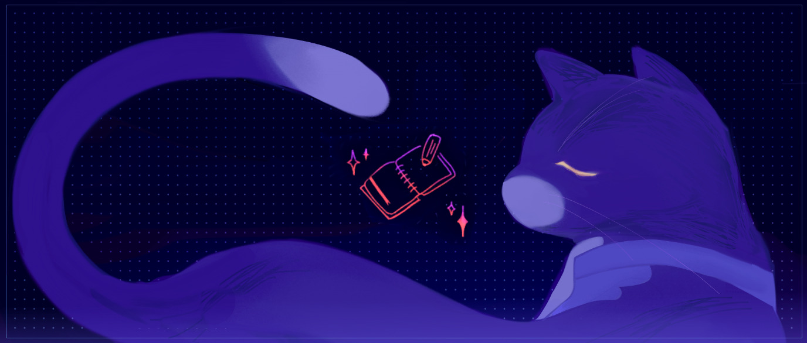
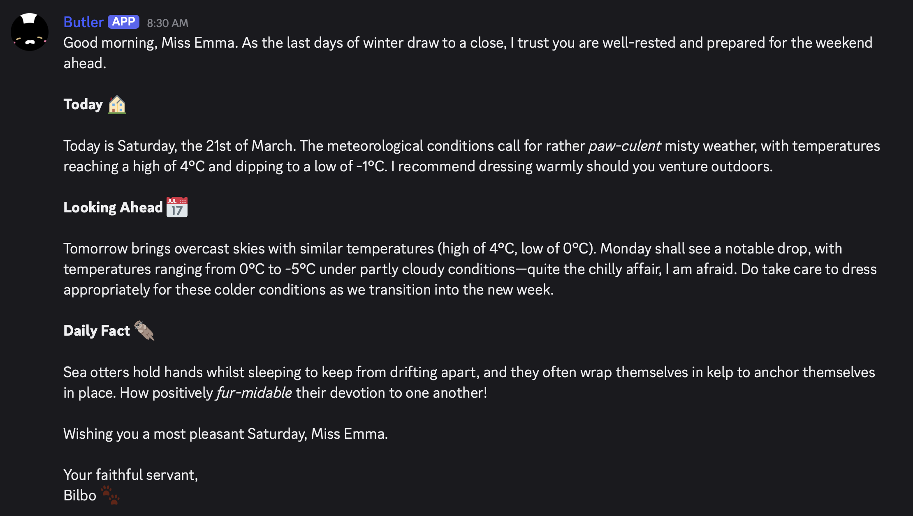
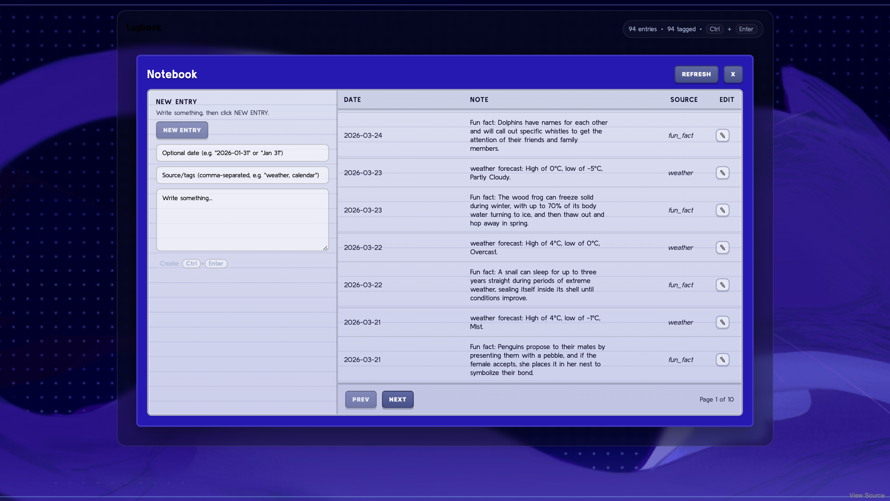

A butler-style assistant built with cron and SQLite

I found it difficult to keep up with reminders, calendar updates, and to-do lists across the different apps I was already using, so I built an AI assistant that could manage everything from one place. I’ll be going through how I built Bilbo on Val Town with a simple base: an SQLite table for memory and a couple of cron jobs to retain past notes, fetch updates, and send daily briefings. I wanted the project to feel playful, so I gave the assistant a cat-butler persona and design, and named them Bilbo*.
Meet the Butler
Every morning, Bilbo sends me a briefing through a Discord channel with my reminders, the day’s weather forecast, a fun fact, and my calendar schedule. I can also message Bilbo throughout the day, to update my calendar, leave notes, or ask questions. In keeping with my idea, all of Bilbo’s replies are polished, formal, and cat-themed.

A sample daily brief on Discord
Behind the Scenes
The project is hosted on Val.town, a great fit thanks to its built-in SQLite storage, HTTP request handling, and scheduled cron jobs. Bilbo keeps track of information through their notebook backed by SQLite. This table acts as Bilbo’s memory store: each entry is saved as a log item and can be tagged, dated, or left undated depending on whether it’s a reminder or background information.

This is the notebook interface and some of the entries fed into the morning brief.
The daily briefing is assembled through a chain of scheduled cron jobs. One cron job fetches the weather via an HTTP request to wttr.in, another calls the Claude API to generate fun facts for the week, and another queries the relevant SQLite entries before packaging everything as a Discord text.
*there's no significance to “Bilbo”, I just thought it'd be a silly name for a butler.